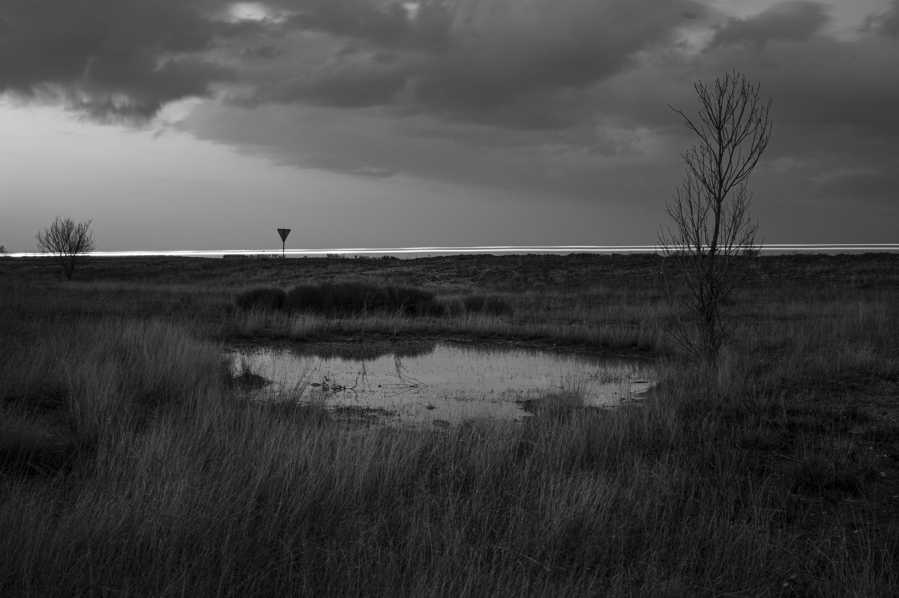
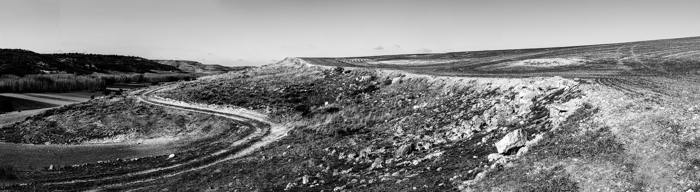
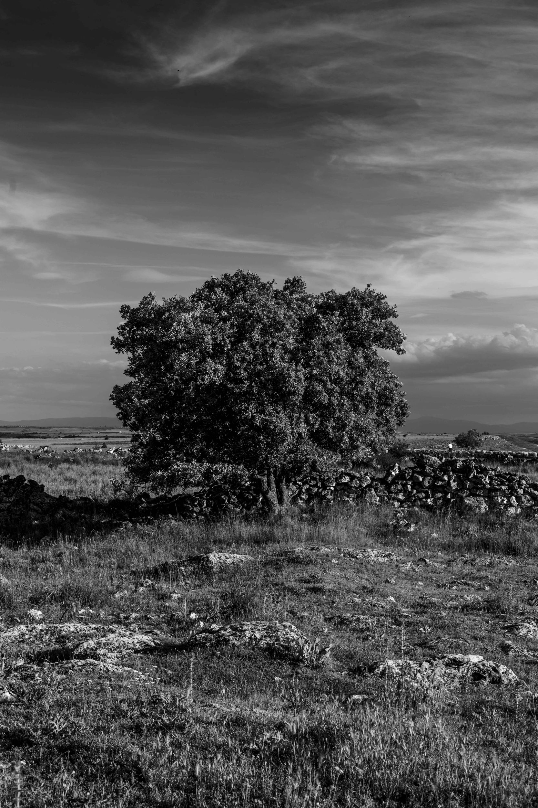
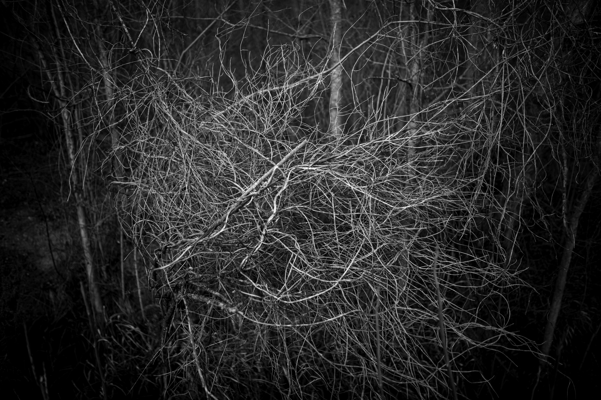
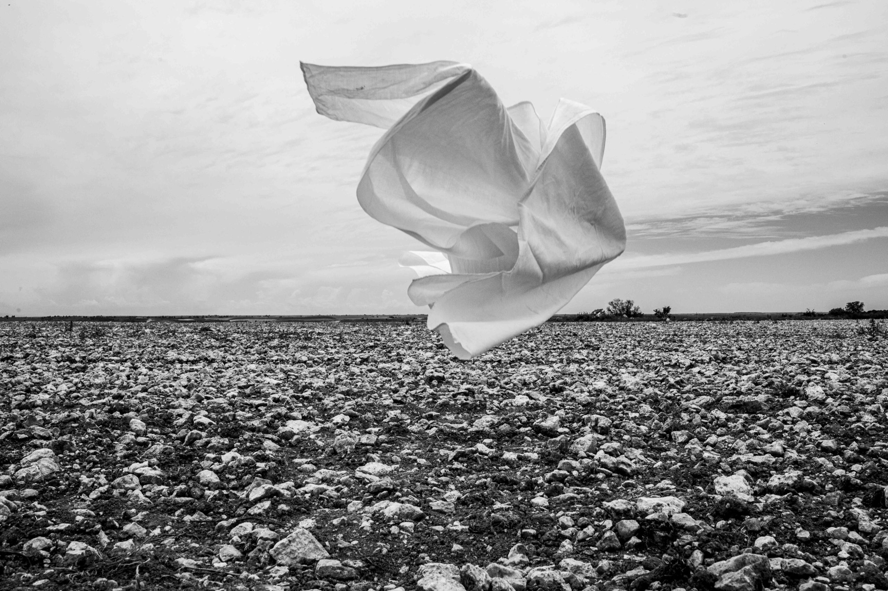

González Fischer — vinos artesanales de Sacramenia, Segovia
ARS LONGA, VITA BREVIS
VINOS ARTESANALES · SACRAMENIA · SEGOVIA
⌄
I — El proyecto
Una casa, un viñedo, una bodega.
Somos Luana Fischer —fotógrafa, nacida en São Paulo— y David González —ingeniero agrónomo—. Nos une, entre otras muchas cosas, un vínculo de toda la vida con Sacramenia y con Valtiendas, su comarca vitivinícola, y la pasión por el vino.
Hace casi quince años, con el nacimiento de nuestro hijo, sentimos que era el momento de volver. De reconstruir algo para nosotros y para él; algo que nos anclara a esta tierra que, como tantas otras zonas rurales, se iba vaciando poco a poco.
Así nació González Fischer. Nuestro objetivo nunca fue apenas vender vino, sino vivirlo en cada paso: desde la tierra y sus ciclos hasta la elaboración y la crianza. Y hacerlo sin prisas — tardamos casi diez años en sacar al mercado nuestro primer vino.
Nuestra bodega no nació como una empresa, sino como un proyecto de vida.

II — El terruño
En mitad de la llanura castellana.
Donde se tocan las provincias de Segovia, Burgos y Valladolid, se extienden los Páramos del Duratón: llanuras interminables, elevadas más de 950 m. sobre el nivel del mar, perfectamente horizontales, y sólo quebradas por valles horadados durante siglos por los cursos de agua, y pequeños pueblos, hoy casi vaciados, a sus márgenes.
Es en uno de estos pueblos, Sacramenia, donde elaboramos nuestros vinos, con uvas de las viñas plantadas en esos páramos.
El clima aquí es extremo, con grandes variaciones de temperatura entre el invierno y el verano, entre el día y la noche. Llueve poco, y los suelos pedregosos de caliza y cuarzo son pobres. A veces cuesta creer que esta inmensidad desolada pueda albergar vida; y, sin embargo, precisamente gracias a estas condiciones los viñedos de este lugar han producido durante siglos uvas y vinos de excelente calidad.

En Sacramenia, casi cada familia tenía un majuelo en estos páramos, bordeado de almendros y cerezos, y su pequeño lagar subterráneo en la ladera de la montaña. A las puertas de esas bodegas probamos vino por primera vez, y allí vimos cómo se hacía.
Muchos hijos se han ido; el pueblo se vacía lenta, pero inexorablemente, y los mayores ya no pueden trabajar esos majuelos de escaso rendimiento. Nosotros decidimos quedarnos.
Desde entonces no hemos plantado una sola cepa: hemos preferido buscar, recuperar y mantener esos pequeños viñedos singulares que, a pesar de dar una uva fantástica, estaban en riesgo de desaparecer. Algunos son muy viejos, otros no tanto, pero todos tienen una historia, y algo especial que contar.
- Altitud
- 952 m
- Suelo
- Caliza y cuarzo
- Clima
- Continental extremo
- Amplitud térmica
- > 20ºC

III — El oficio
El vino se hace, primero, en la viña.
Cuidamos con mimo nuestros pequeños majuelos procurando que alcancen su mayor potencial y expresión en los vinos, no solo hoy, sino también mañana y los próximos cien años.
Creemos en una viticultura sostenible, en armonía con el medio natural, respetuosa con la biodiversidad, los suelos y los acuíferos. Por eso mantenemos los suelos vivos y sanos, fomentando la cobertura vegetal espontánea y minimizando las labores mecánicas; usamos sólo tratamientos orgánicos y aplicamos los principios de la agricultura regenerativa.
Los largos ciclos vegetativos del viñedo en altura y en secano, la brisa casi constante y los días cálidos seguidos de noches frías durante la maduración nos permiten cosechar uvas sanas, pequeñas y concentradas, con rendimientos muy modestos pero de gran calidad y potencial.
- Viñedos
- 3 parcelas, 2 Ha
- Variedad
- Tempranillo
- Edad
- 50-70 años
- Régimen
- Secano

Con estas uvas, recogidas a mano y seleccionadas cuidadosamente, elaboramos nuestros vinos con la misma filosofía de respeto por el producto y el medio, priorizando los procesos manuales y no agresivos y manteniendo al mínimo el uso de energía y de aditivos.
Entendemos la crianza como la manera de lograr el equilibrio y la excelencia en la botella, no como una mera aportación de sabores y meses. Por eso nuestras crianzas no se ajustan a un calendario o libro de recetas: son cada vino, cada añada, cada parcela los que marcan el ritmo.
Nuestro objetivo no es hacer vinos idénticos cada año, sino elaborar cada año el mejor vino posible, conjugando la crianza sobre lías, los materiales, los tiempos y los ensamblajes con paciencia e intuición, dejando que el tiempo haga su labor.
- Vendimia
- Manual
- Elaboración
- Baja intervención
- Producción
- < 4.000 botellas
- D.O.P.
- Valtiendas

IV — Los vinos
Tres vinos, un mismo lugar.
Tempranillo de los páramos del Duratón. Tres maneras de leer la misma tierra.